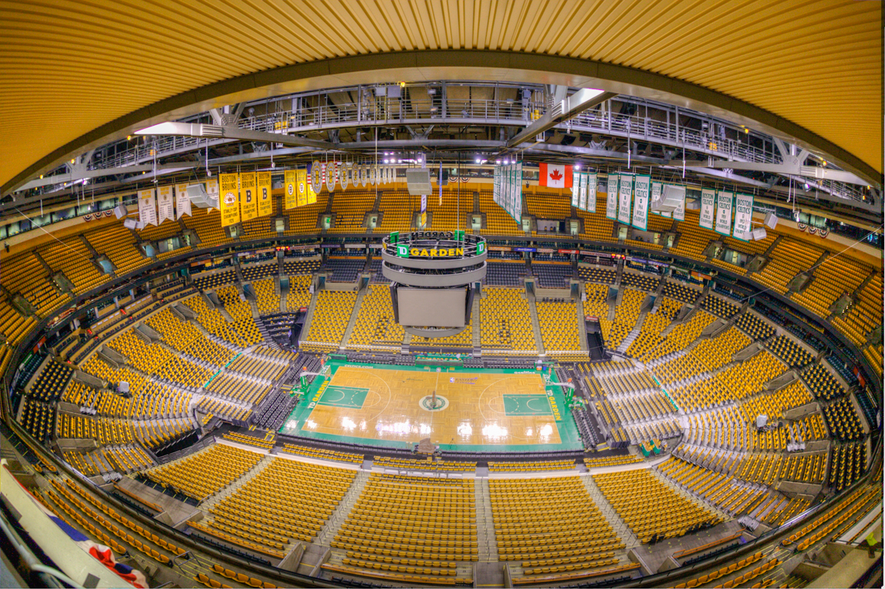
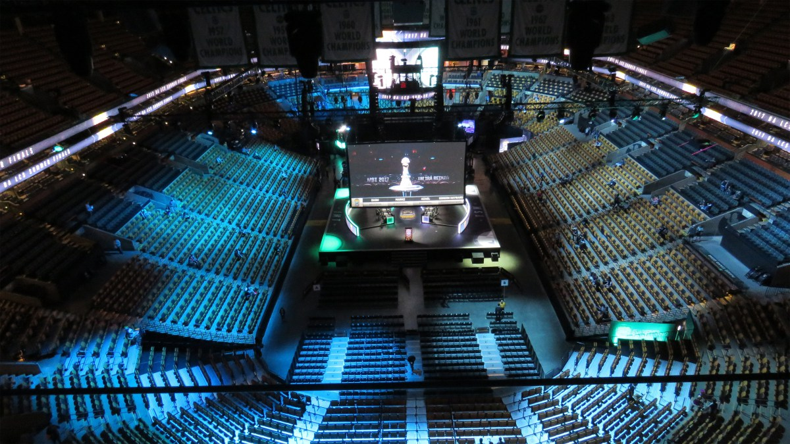
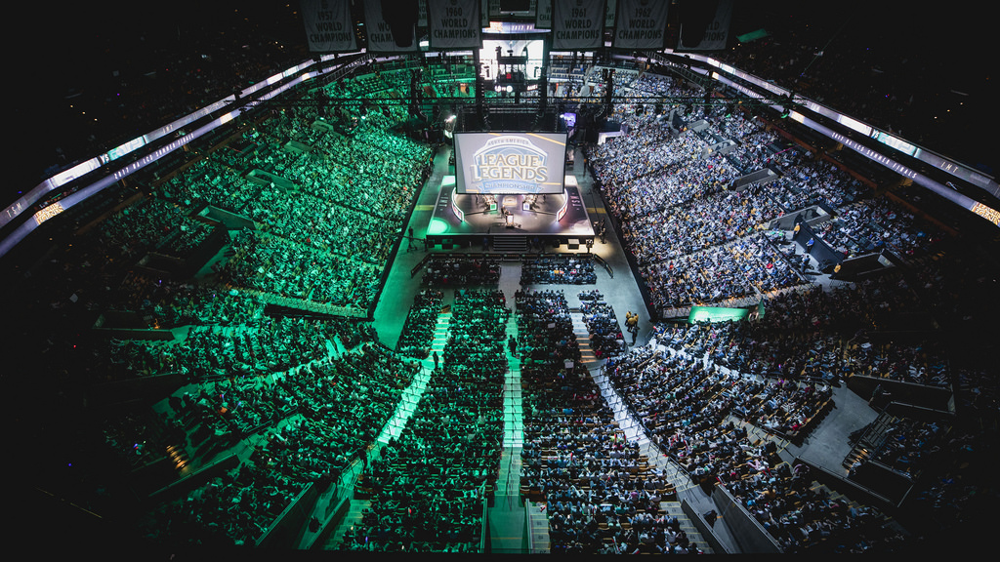
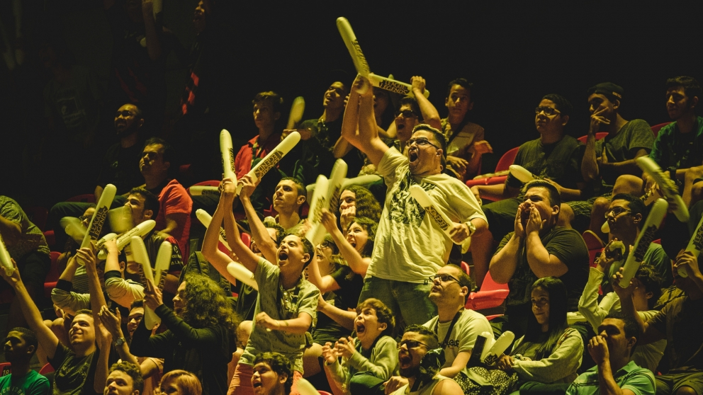
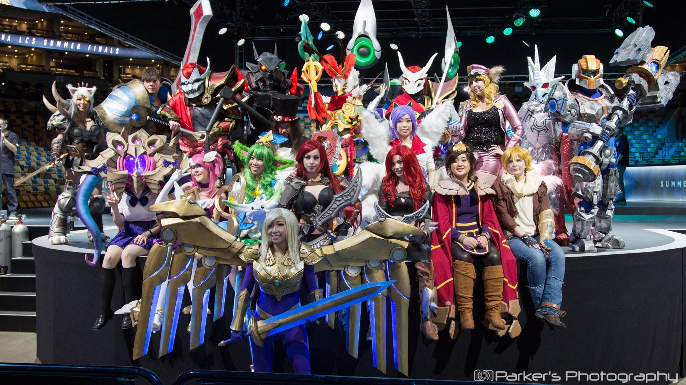
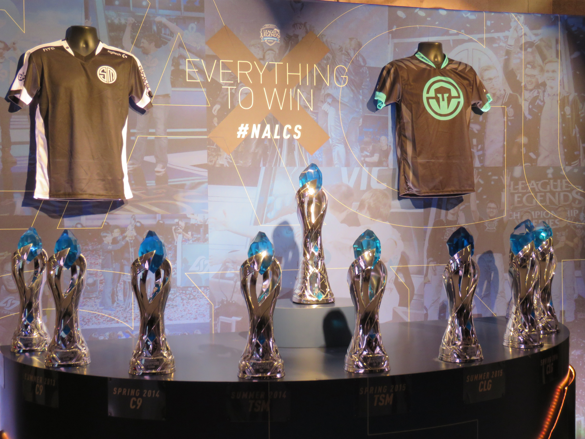
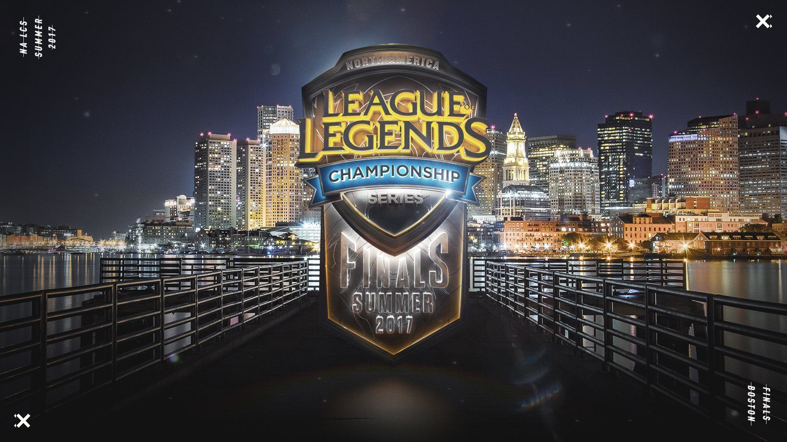

North America League Championship Series Summer Finals 2017
League of Legends has the most premier esports scene in the world. The North American League Championship Series (NA LCS) is the North American League of Legends esports scene. Teams of gamers compete to prove who is the best in the nation. The NA LCS Summer Finals is the conclusion to the North American esports season. After competing for a spot in the gauntlet all split, the top 6 teams compete in a tournament concluding in the summer finals. The top two teams play for a multimillion dollar prize pool and a spot at the World Championship.
Each year the NA LCS Finals takes place in a different city. For 2017, the venue was TD Garden in Boston. The stadium could hold ~14,000 people. During the event, Riot takes over the building, transforming it into a wonderland for LCS fans. There are cosplayers (costumed performers), photo ops, special League-Themed menu items, free swag, exclusive merch sales, and meet and greets with pro players, famous online personalities, and our casters (the announcer team). The goal is to thrill the fans and give them an experience past what they could watch online.
Event Videos
Photos
     #Celtics @gordonhayward talking some @lolesports #NALCSFinals at #TDGarden! He's rooting for #IMTWIN. Who do you think will win it? pic.twitter.com/PLjQEDZuJe
— TD Garden (@tdgarden) September 3, 2017
Event Art

Fan Reactions to Fan Activations
the squad#TSMWIN #nalcsfinals pic.twitter.com/OBy5ZQnhFe
— Dizzasta (@Dizzasta141) September 4, 2017
My boy @gordonhayward repping at #nalcsfinals! pic.twitter.com/Z5x6dv6476
— Marc Rudkowski (@inacubicle) September 3, 2017
Met @TSMReginald, @LiQuiD112 , @YassuoNA, & @BoxBoxLoL this weekend at #NALCSFinals. Thanks for the pictures, guys. I had a blast! pic.twitter.com/q7aZepNZTk
— Benjamin Hubbell (@taberif730) September 5, 2017
RT RiotJynx: A big thank you to all the talented cosplayers who attended the #NALCSFinals this weekend! ⭐ … pic.twitter.com/cfpS6Q1ew6
— Typpi - KU$H LORD (@mlgsmokers) September 4, 2017
Yay for nonphotogenic pics with LCS caster @RivingtonThe3rd 😂 It was great meeting you! #nalcsfinals #RiotGames #LeagueOfLegends pic.twitter.com/cm4tcQIJCo
— Aellai | Kim 🍜💍 (@AellaiKim) September 4, 2017
Incredible games! So glad I was there to watch it live. Congratulations to @TeamSoloMid @Bjergsen #nalcsfinals #TSM pic.twitter.com/j8WAKkb1hq
— ♡angelica (@Poochiiee_x3) September 4, 2017
Tysm @LOLHuHi for throwing me a meep 💙 #NALCS #NALCSFinals pic.twitter.com/HWBqLUhC3U
— jenelle (@jenelledepasion) September 4, 2017
Not only did we find Amumu! but TSM and Immortals also TheMadShow got to meet his idol @Bjergsen ! #NALCS #nalcsfinals pic.twitter.com/lspaQr4ram
— FrontSide eSports™ (@FS__ESports) September 3, 2017
Social & Press